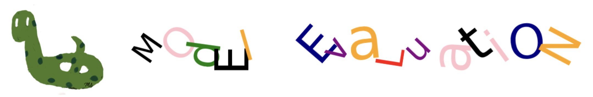
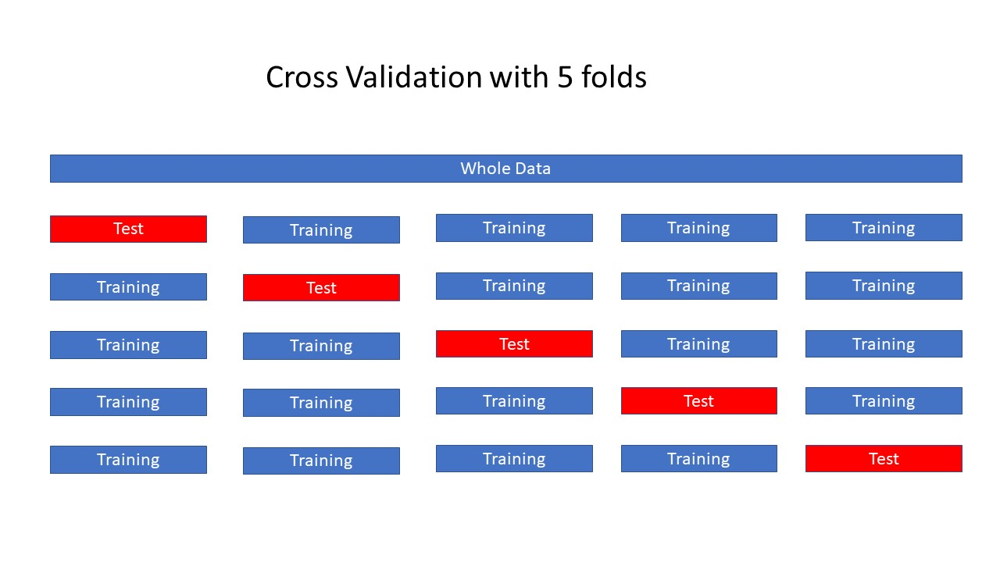
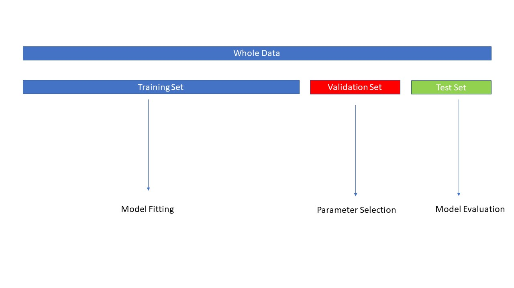
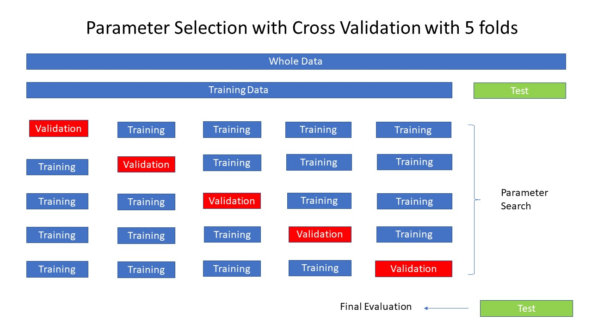

Model Evaluation#

Cross Validation#
The data is repeatedly partitioned into distinct training and test sets, enabling the training of multiple models across these variations.
Model-1: The initial model is trained using the first fold as the test set, with the remaining folds comprising the training set.
Model-2: The subsequent model is trained using the second fold as the test set, while the remaining folds are utilized as the training set.
This process continues with folds 3, 4, and 5, each acting as the test set in succession.
For each of these five data partitions, accuracy is calculated to evaluate model performance.

CV on Breast Cancer Dataset#
# import breast cancer data
from sklearn.datasets import load_breast_cancer
dataset_bc = load_breast_cancer()
# X_bc, y_bc and shapes
X_bc = dataset_bc.data
y_bc = dataset_bc.target
X_bc.shape, y_bc.shape
((569, 30), (569,))
# training and test sets
from sklearn.model_selection import train_test_split
X_bc_train, X_bc_test, y_bc_train, y_bc_test = train_test_split(X_bc, y_bc, random_state=42)
# instantiate the class into an object
from sklearn.ensemble import RandomForestClassifier
rfc = RandomForestClassifier()
# fit the model
rfc.fit(X_bc_train, y_bc_train)
RandomForestClassifier()In a Jupyter environment, please rerun this cell to show the HTML representation or trust the notebook.
On GitHub, the HTML representation is unable to render, please try loading this page with nbviewer.org.
RandomForestClassifier()
# train test scores
rfc.score(X_bc_train, y_bc_train), rfc.score(X_bc_test, y_bc_test)
(1.0, 0.972027972027972)
# cross validation
from sklearn.model_selection import cross_val_score
cross_val_score(rfc, X_bc, y_bc, cv = 5)
array([0.9122807 , 0.93859649, 0.98245614, 0.97368421, 0.97345133])
cross_val_score(rfc, X_bc, y_bc, cv = 5).mean()
0.95960254618848
CV on Iris Data#
# importiris data
from sklearn.datasets import load_iris
dataset_iris = load_iris()
# X_iris, y_iris and shapes
X_iris = dataset_iris.data
y_iris = dataset_iris.target
X_iris.shape, y_iris.shape
((150, 4), (150,))
# training and test sets
from sklearn.model_selection import train_test_split
X_iris_train, X_iris_test, y_iris_train, y_iris_test = train_test_split(X_iris, y_iris, random_state=42)
# instantiate the class into an object
from sklearn.ensemble import RandomForestClassifier
rfc = RandomForestClassifier()
# fit the model
rfc.fit(X_iris_train, y_iris_train)
RandomForestClassifier()In a Jupyter environment, please rerun this cell to show the HTML representation or trust the notebook.
On GitHub, the HTML representation is unable to render, please try loading this page with nbviewer.org.
RandomForestClassifier()
# train test scores
rfc.score(X_iris_train, y_iris_train), rfc.score(X_iris_test, y_iris_test)
(1.0, 1.0)
# cross validation
from sklearn.model_selection import cross_val_score
cross_val_score(rfc, X_iris, y_iris, cv = 5)
array([0.96666667, 0.96666667, 0.93333333, 0.93333333, 1. ])
cross_val_score(rfc, X_iris, y_iris, cv = 5).mean()
0.96
Validation Set#
The test set should not be used for parameter selection, as this could lead to overfitting.
The accuracy obtained from the test set might not generalize well to new, unseen data.
A common solution is to split the data into three distinct subsets:
Training Set: Used to train the model.
Validation Set: Used to tune model parameters and select the best model.
Test Set: Used for the final evaluation of model performance on unseen data.

Validation Set for Housing Data#
from sklearn.datasets import fetch_california_housing
Xh, yh = fetch_california_housing(return_X_y=True)
Xh_train_valid, Xh_test, yh_train_valid, yh_test = train_test_split(Xh, yh, random_state=0)
Xh_train, Xh_valid, yh_train, yh_valid = train_test_split(Xh_train_valid, yh_train_valid, random_state=0)
Xh_train.shape, Xh_valid.shape, Xh_test.shape
((11610, 8), (3870, 8), (5160, 8))
from xgboost import XGBRegressor
for md in [1,2,3,4,5]:
xgb = XGBRegressor(max_depth=md)
xgb.fit(Xh_train, yh_train)
print(f'max_depth = {md} ---> Validation Score = {xgb.score(Xh_valid, yh_valid):.2f}')
max_depth = 1 ---> Validation Score = 0.70
max_depth = 2 ---> Validation Score = 0.78
max_depth = 3 ---> Validation Score = 0.80
max_depth = 4 ---> Validation Score = 0.81
max_depth = 5 ---> Validation Score = 0.81
xgb = XGBRegressor(max_depth=4)
xgb.fit(Xh_train_valid, yh_train_valid)
xgb.score(Xh_train_valid, yh_train_valid), xgb.score(Xh_test, yh_test)
(0.8812581464722442, 0.8328913896385808)
Grid Search#
Grid Search is a technique for tuning a model’s parameters.
It exhaustively evaluates all possible combinations of specified parameters to identify the best set for optimal performance. 
GS on Breast Cancer Data#
# import GridSearchCV
from sklearn.model_selection import GridSearchCV
# parameters
param_grid = {'max_depth': [3,5,7],'n_estimators': [5,10,20,30]}
# instantiate the GridSearchCV class with the model rfc,
#the parameter grid to search (param_grid), and the cross-validation strategy
grid_search = GridSearchCV(rfc, param_grid, cv=5)
# fit
grid_search.fit(X_bc_train, y_bc_train)
GridSearchCV(cv=5, estimator=RandomForestClassifier(),
param_grid={'max_depth': [3, 5, 7],
'n_estimators': [5, 10, 20, 30]})In a Jupyter environment, please rerun this cell to show the HTML representation or trust the notebook. On GitHub, the HTML representation is unable to render, please try loading this page with nbviewer.org.
GridSearchCV(cv=5, estimator=RandomForestClassifier(),
param_grid={'max_depth': [3, 5, 7],
'n_estimators': [5, 10, 20, 30]})RandomForestClassifier()
RandomForestClassifier()
# best_params
grid_search.best_params_
{'max_depth': 7, 'n_estimators': 30}
# best scores
grid_search.best_score_
0.962435020519836
# training score
grid_search.score(X_bc_train, y_bc_train)
0.9976525821596244
# test score
grid_search.score(X_bc_test, y_bc_test)
0.965034965034965
# best estimator
grid_search.best_estimator_
RandomForestClassifier(max_depth=7, n_estimators=30)In a Jupyter environment, please rerun this cell to show the HTML representation or trust the notebook.
On GitHub, the HTML representation is unable to render, please try loading this page with nbviewer.org.
RandomForestClassifier(max_depth=7, n_estimators=30)
# details: cv_rsults
grid_search.cv_results_.keys()
dict_keys(['mean_fit_time', 'std_fit_time', 'mean_score_time', 'std_score_time', 'param_max_depth', 'param_n_estimators', 'params', 'split0_test_score', 'split1_test_score', 'split2_test_score', 'split3_test_score', 'split4_test_score', 'mean_test_score', 'std_test_score', 'rank_test_score'])
GS on Iris Data#
# parameters
param_grid = {'max_depth': range(1,20),'n_estimators': range(10,101,10)}
# instantiate the GridSearchCV class with the model rfc,
#the parameter grid to search (param_grid), and the cross-validation strategy
grid_search = GridSearchCV(rfc, param_grid, cv=5)
# fit
grid_search.fit(X_iris_train, y_iris_train)
GridSearchCV(cv=5, estimator=RandomForestClassifier(),
param_grid={'max_depth': range(1, 20),
'n_estimators': range(10, 101, 10)})In a Jupyter environment, please rerun this cell to show the HTML representation or trust the notebook. On GitHub, the HTML representation is unable to render, please try loading this page with nbviewer.org.
GridSearchCV(cv=5, estimator=RandomForestClassifier(),
param_grid={'max_depth': range(1, 20),
'n_estimators': range(10, 101, 10)})RandomForestClassifier()
RandomForestClassifier()
# best_params
grid_search.best_params_
{'max_depth': 14, 'n_estimators': 10}
# best scores
grid_search.best_score_
0.9636363636363636
# training score
grid_search.score(X_iris_train, y_iris_train)
1.0
# test score
grid_search.score(X_iris_test, y_iris_test)
1.0
# best estimator
grid_search.best_estimator_
RandomForestClassifier(max_depth=14, n_estimators=10)In a Jupyter environment, please rerun this cell to show the HTML representation or trust the notebook.
On GitHub, the HTML representation is unable to render, please try loading this page with nbviewer.org.
RandomForestClassifier(max_depth=14, n_estimators=10)
# details: cv_rsults
grid_search.cv_results_.keys()
dict_keys(['mean_fit_time', 'std_fit_time', 'mean_score_time', 'std_score_time', 'param_max_depth', 'param_n_estimators', 'params', 'split0_test_score', 'split1_test_score', 'split2_test_score', 'split3_test_score', 'split4_test_score', 'mean_test_score', 'std_test_score', 'rank_test_score'])
Manual Grid search#
from sklearn.datasets import load_breast_cancer
X, y = load_breast_cancer(return_X_y=True)
from sklearn.model_selection import train_test_split
X_train_val, X_test, y_train_val, y_test = train_test_split(X, y, random_state=0)
X_train, X_val, y_train, y_val = train_test_split(X_train_val, y_train_val, random_state=0)
from sklearn.neighbors import KNeighborsClassifier
neighbor_list = range(1,22,2)
best_val_score = 0
best_param = None
for nn in neighbor_list:
knn = KNeighborsClassifier(n_neighbors=nn)
knn.fit(X_train, y_train)
val_score = knn.score(X_val, y_val)
if val_score > best_val_score :
best_val_score = val_score
best_param = nn
print(f'Best Parameter: n_neighbors={best_param}')
print(f'Best Validation Score = {round(best_val_score)} ')
knn = KNeighborsClassifier(n_neighbors=best_param)
knn.fit(X_train_val, y_train_val)
test_score = knn.score(X_test, y_test)
print(f'Test score of best model is: {round(test_score,2)}')
Best Parameter: n_neighbors=5
Best Validation Score = 1
Test score of best model is: 0.94